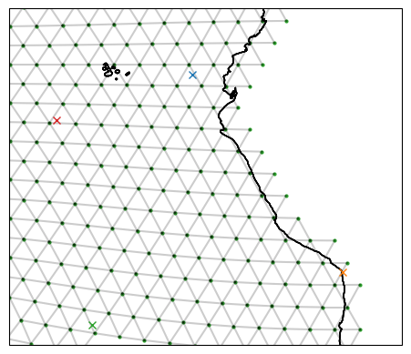
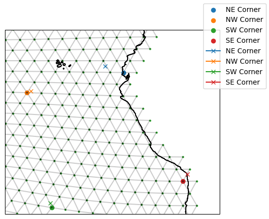
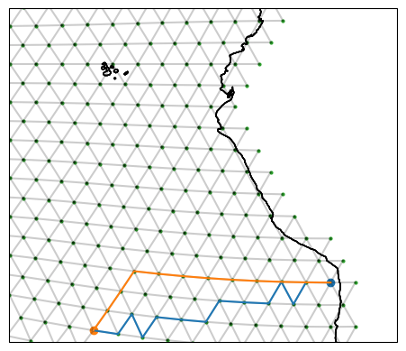
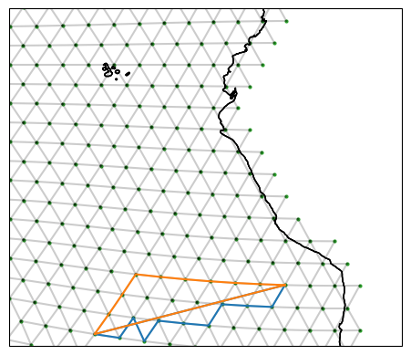

Quickstart
The following notebook introduces iconspy’s datatypes and some of their associated methods.
Having followed through this tutorial you will be able to construct and visusalise iconspy sections.
[1]:
from pathlib import Path
import matplotlib.pyplot as plt
import cartopy.crs as ccrs
import xarray as xr
import iconspy as ispy
from iconspy.demo_helpers import setup_plot_area_quickstart, setup_plot_area_mar
import cmocean.cm as cmo
Load and prepare the example data
We will load from netcdf files a tgrid which describes the model grid, and an fxgrid which contains bathymetry information.
We then have to put them in a format that iconspy can understand. For the tgrid this means calling ispy.convert_tgrid_data, and for the the fxgrid we must make sure the dimensions have the correct names.
The call to convert_tgrid_data can be slow on large grids. For R2B4 (~100 km) grids the conversion is near instantaneous; however for an R2B9 (~5 km) grid this can take around 30 seconds.
[2]:
shared_data_path = Path("/pool/data/ICON/oes/input/r0006/")
R02B04_path = shared_data_path / "icon_grid_0036_R02B04_O"
grid_path = R02B04_path / "R2B4_ocean-grid.nc"
fx_path = R02B04_path / "R2B4L40_fx.nc"
ds_tgrid = xr.open_dataset(grid_path) # horizontal grid information
ds_fx = xr.open_dataset(fx_path) # Contains bathymetry etc.
# Put datasets into the iconspy format
ds_IsD = ispy.convert_tgrid_data(ds_tgrid)
ds_fx = ds_fx.rename(
{
"ncells": "cell",
"ncells_2": "edge",
"ncells_3": "vertex",
}
)
Overview
When constructing a region or a section a typical workflow will be to define a set of TargetStations which we want to connect. We convert these into ModelStations which lie on the model grid, before joining them together to form Sections or Regions.
Target and Model stations
The target station
When creating sections or regions, we typically start with a set of points we want to connect. Such points are represented in ispy as a TargetStation. A TargetStation object is initialised with a name, the target points longitude followed by its latitude, and finally a boolean stating whether we want the point to be on the land boundary or in the ocean.
[3]:
ispy.TargetStation?
Init signature: ispy.TargetStation(name, lon, lat, boundary=True)
Docstring:
Represents a target station
Parameters
----------
name : str
Name of the target station
lon : float
Longitude of the target station
lat : float
Latitude of the target station
boundary : bool, optional
Whether the station should be sited on a boundary point or not, by default True
Attributes
----------
name : str
Name of the target station
target_lon : float
Longitude of the target station
target_lat : float
Latitude of the target station
boundary : bool
Whether the station should be sited on a boundary point or not
Example
-------
>>> import iconspy as ispy
>>> target_station = ispy.TargetStation("My Station", 10.0, 20.0)
>>> target_station.plot()
File: /work/mh0256/m301014/iconspy/iconspy/core.py
Type: type
Subclasses:
[4]:
target_ne_corner = ispy.TargetStation("NE Corner", -83.72, -0.928, boundary=True)
target_nw_corner = ispy.TargetStation("NW Corner", -95.794, -4.976, boundary=False)
target_sw_corner = ispy.TargetStation("SW Corner", -92.592, -23.219, boundary=False)
target_se_corner = ispy.TargetStation("SE Corner", -70.285, -18.491, boundary=True)
fig, ax = setup_plot_area_quickstart(ds_IsD)
target_ne_corner.plot(ax=ax, gridlines=False)
target_se_corner.plot(ax=ax, gridlines=False)
target_sw_corner.plot(ax=ax, gridlines=False)
target_nw_corner.plot(ax=ax, gridlines=False)

The model station
A TargetStation will not typically lie exactly on a model grid point. We can convert these stations to model stations as such:
[5]:
# Convert the target stations to model stations
model_ne_corner = target_ne_corner.to_model_station(ds_IsD)
model_nw_corner = target_nw_corner.to_model_station(ds_IsD)
model_sw_corner = target_sw_corner.to_model_station(ds_IsD)
model_se_corner = target_se_corner.to_model_station(ds_IsD)
fig, ax = setup_plot_area_quickstart(ds_IsD)
# Plot the model stations (circles)
model_ne_corner.plot(ax=ax, gridlines=False)
model_nw_corner.plot(ax=ax, gridlines=False)
model_sw_corner.plot(ax=ax, gridlines=False)
model_se_corner.plot(ax=ax, gridlines=False)
# Compare with the target station (crosses)
target_ne_corner.plot(ax=ax, gridlines=False)
target_nw_corner.plot(ax=ax, gridlines=False)
target_sw_corner.plot(ax=ax, gridlines=False)
target_se_corner.plot(ax=ax, gridlines=False)
fig.legend()
[5]:
<matplotlib.legend.Legend at 0x7ffb5f295160>

The ModelStation uses a “ball tree” to find the nearest vertex on the model grid to it. If we indicate we want a boundary vertex in our TargetStation, this will be a point on land. For example, our North East Corner TargetStation sits over the ocean (blue cross); however, we have specified we want a boundary vertex so the ModelStation we identify is at the coast (blue circle).
Its worth noting that the ball tree understand the Earth’s sphericity, so you don’t need to worry about using longitudes of [-180, 180) or [0, 360). You will always get the closest “valid” point.
If you want to see the index of the vertex of the ModelStation you can do so as follows:
[6]:
model_ne_corner.vertex
[6]:
4764
Connect stations to form sections
We construct sections using ispy.Section. This is called with a section name, a starting model station and an ending model station, ds_IsD which describes the model grid, and a description of type of section we want.
Valid arguments for section_type are:
"great circle": approximates the great circle"shortest": the shortest path"contour": approximate a contour
In the below we look at how the great circle and shortest paths differ:
[7]:
ispy.Section?
Init signature:
ispy.Section(
name,
model_station_a,
model_station_b,
ds_IsD,
section_type=None,
contour_target=None,
contour_data=None,
)
Docstring: <no docstring>
File: /work/mh0256/m301014/iconspy/iconspy/core.py
Type: type
Subclasses: LandSection, _ReconstructedSection, CombinedSection
[8]:
ds_IsD["edges_of_vertex"][0, :]
[8]:
<xarray.DataArray 'edges_of_vertex' (ne_v: 6)> Size: 24B
array([ 0, 1, 2, 5, 7, -1], dtype=int32)
Coordinates:
vlon float64 8B 73.0
vlat float64 8B 73.27
vertex int32 4B 0
Dimensions without coordinates: ne_v
Attributes:
long_name: edges around each vertex
CDI_grid_type: unstructured
institution: MPIMET[11]:
southern_edge_great_circle = ispy.Section(
"Southern Edge (great circle)",
model_se_corner,
model_sw_corner,
ds_IsD,
section_type="great circle",
)
southern_edge_shortest = ispy.Section(
"Southern Edge (shortest)",
model_se_corner,
model_sw_corner,
ds_IsD,
section_type="shortest",
)
fig, ax = setup_plot_area_quickstart(ds_IsD)
model_se_corner.plot(ax=ax, gridlines=False)
model_sw_corner.plot(ax=ax, gridlines=False)
southern_edge_great_circle.plot(ax=ax, gridlines=False)
southern_edge_shortest.plot(ax=ax, gridlines=False)

The "great circle" option approximates the real great circle on the globe, following 13 edges. Meanwhile, the "shortest path" finds a route between the start and end points which takes only 11 edges and so is shorter. Notice how the shortest path looks nothing like the great circle!
[12]:
len(southern_edge_great_circle.edge_path), len(southern_edge_shortest.edge_path)
[12]:
(13, 11)
When we provide ModelStations to ispy and ask it make a section, ispy constructs a “graph” representation of the model grid. In this representation the model vertices are treated as nodes and the cell edges which connect them are assigned “weights”. Using Djikstra’s algorithm, we then identify the path between the two ModelStations which minimises the sum of the weights from the edges traversed. When we look for the "shortest path" the weights used are just the length of
the edges. When we use the "great circle", ispy calculates the theoretical great circle with the weights corresponding to the distance of a particular edge from this line.
We can also try and define sections which approximate bathymetry contours. To do this we need points which start and end near the contours we want to examine, and preferrably well defined bathymetry. Given the coarseness of the R2B4 grid this may look funny, but the method comes into its own on higher resolution grids.
Let’s see if we can create a section which approximates the bathmetry of the mid-Atlantic ridge.
[14]:
# Define our targer stations for the Mid-Atlantic Ridge section and convert them to model stations
target_mar_n = ispy.TargetStation("MAR North", -34.0, 36.0, boundary=False)
target_mar_s = ispy.TargetStation("MAR South", -26.4, 0.0, boundary=False)
model_mar_n = target_mar_n.to_model_station(ds_IsD)
model_mar_s = target_mar_s.to_model_station(ds_IsD)
# Create a contour section
mar_contour = ispy.Section(
"Mid-Atlantic Ridge (contour)",
model_mar_n,
model_mar_s,
ds_IsD,
section_type="contour",
contour_data=ds_fx["column_thick_e"],
contour_target=2000,
)
# Let's see how we did!
fig, ax = setup_plot_area_mar(ds_IsD)
cax = ax.tricontourf(
ds_IsD["elon"],
ds_IsD["elat"],
ds_fx["column_thick_e"],
cmap=cmo.amp_r,
levels=[0, 1000, 2000, 3000, 4000, 5000, 6000],
)
model_mar_n.plot(ax=ax, gridlines=False)
model_mar_s.plot(ax=ax, gridlines=False)
mar_contour.plot(ax=ax, gridlines=False)
fig.colorbar(cax, ax=ax, label="Column thickness", orientation="horizontal")
[14]:
<matplotlib.colorbar.Colorbar at 0x7ffb4fbe1090>

Looks like we did pretty well!
We can get the orientation of edges along a path by running the below on a section object:
[17]:
southern_edge_great_circle.edge_orientation
[17]:
<xarray.DataArray 'edge' (step_in_path: 13)> Size: 104B
array([-1., -1., -1., -1., -1., 1., 1., -1., 1., -1., -1., -1., 1.])
Coordinates:
* step_in_path (step_in_path) int64 104B 0 1 2 3 4 5 6 7 8 9 10 11 12
elon (step_in_path) float64 104B -72.11 -73.78 ... -89.55 -91.29
elat (step_in_path) float64 104B -19.65 -20.62 ... -23.39 -24.13
Attributes:
sign convention: positive to the left when traversing the pathConnect sections to form a region
[18]:
example_region = ispy.Region("Offshore of the Amazon", [southern_edge_great_circle, southern_edge_shortest], ds_IsD)
/work/mh0256/m301014/iconspy/iconspy/utils.py:122: UserWarning: rename 'step_in_path_v' to 'step_in_path' does not create an index anymore. Try using swap_dims instead or use set_index after rename to create an indexed coordinate.
edge_path_xr = edge_path_xr.rename(step_in_path_v="step_in_path")
/work/mh0256/m301014/iconspy/iconspy/utils.py:33: UserWarning: rename 'step_in_path_v' to 'step_in_path' does not create an index anymore. Try using swap_dims instead or use set_index after rename to create an indexed coordinate.
vertex_path = vertex_path.rename(step_in_path_v="step_in_path")
/work/mh0256/m301014/iconspy/iconspy/utils.py:75: FutureWarning: dropping variables using `drop` is deprecated; use drop_vars.
path_orientation = path_orientation.drop(["clon", "clat", "cell"])
[21]:
fig, ax = setup_plot_area_quickstart(ds_IsD)
example_region.plot(ax=ax, gridlines=False)

Regions have paths of edges and also edge orientations that we can use for calcualting fluxes into the region
[22]:
print(example_region.edge_circuit)
print(example_region.path_orientation)
<xarray.DataArray 'edge' (step_in_path: 19)> Size: 76B
array([13395, 12966, 12951, 12958, 12947, 12825, 12850, 12848, 12849, 12862,
12863, 12827, 12812, 12819, 12901, 12899, 12953, 12954, 13387],
dtype=int32)
Coordinates:
* step_in_path (step_in_path) int64 152B 0 1 2 3 4 5 6 ... 13 14 15 16 17 18
elon (step_in_path) float64 152B -76.01 -77.7 ... -78.77 -76.55
elat (step_in_path) float64 152B -20.57 -21.49 ... -19.46 -19.55
<xarray.DataArray (step_in_path: 19)> Size: 152B
array([-1., -1., 1., 1., -1., 1., -1., -1., -1., 1., 1., -1., 1.,
1., -1., -1., 1., 1., -1.])
Coordinates:
* step_in_path (step_in_path) int64 152B 0 1 2 3 4 5 6 ... 13 14 15 16 17 18
elon (step_in_path) float64 152B -76.01 -77.7 ... -78.77 -76.55
elat (step_in_path) float64 152B -20.57 -21.49 ... -19.46 -19.55
edge (step_in_path) int32 76B 13395 12966 12951 ... 12954 13387
Attributes:
standard_name: longitude
units: degrees
bounds: clon_bnds
CDI_grid_type: unstructured
institution: MPIMET
Regions also have a list of the cells contained by them
[23]:
example_region.contained_cells
[23]:
<xarray.DataArray 'cell' (cell: 23)> Size: 92B
array([8207, 8208, 8210, 8211, 8212, 8213, 8214, 8216, 8228, 8235, 8238, 8267,
8268, 8269, 8270, 8287, 8288, 8289, 8291, 8293, 8294, 8300, 8579],
dtype=int32)
Coordinates:
* cell (cell) int32 92B 8207 8208 8210 8211 8212 ... 8293 8294 8300 8579
clon (cell) float64 184B -88.72 -88.91 -87.7 ... -82.1 -77.67 -76.58
clat (cell) float64 184B -19.88 -21.24 -19.43 ... -20.51 -20.77 -20.27We can also create a dataset representation of the region to be saved to a netcdf file for subsequent use.
[26]:
example_region.to_ispy_section(fpath="test.nc")
Output will be saved to test.nc
[26]:
<xarray.Dataset> Size: 2kB
Dimensions: (step_in_path: 19, step_in_path_v: 20, cell: 23)
Coordinates:
* step_in_path (step_in_path) int64 152B 0 1 2 3 4 5 ... 14 15 16 17 18
elon (step_in_path) float64 152B -76.01 -77.7 ... -78.77 -76.55
elat (step_in_path) float64 152B -20.57 -21.49 ... -19.55
edge (step_in_path) int32 76B 13395 12966 12951 ... 12954 13387
vlon (step_in_path_v) float64 160B -75.44 -76.59 ... -75.44
vlat (step_in_path_v) float64 160B -19.59 -21.54 ... -19.59
vertex (step_in_path_v) int32 80B 4787 4643 4640 ... 4641 4787
* cell (cell) int32 92B 8207 8208 8210 8211 ... 8294 8300 8579
clon (cell) float64 184B -88.72 -88.91 -87.7 ... -77.67 -76.58
clat (cell) float64 184B -19.88 -21.24 -19.43 ... -20.77 -20.27
Dimensions without coordinates: step_in_path_v
Data variables:
edge_path (step_in_path) int32 76B 13395 12966 12951 ... 12954 13387
vertex_path (step_in_path_v) int32 80B 4787 4643 4640 ... 4641 4787
path_orientation (step_in_path) float64 152B -1.0 -1.0 1.0 ... 1.0 1.0 -1.0
contained_cells (cell) int32 92B 8207 8208 8210 8211 ... 8294 8300 8579
Attributes:
date: 2026-07-13 18:57:18
ispy version: 0.2.0
uuidOfHGrid: 5bd948e8-ac1a-11ea-a6b1-d317264fdca9
section name: Offshore of the AmazonReconstruct sections from a region
Having produced a region we can also extract the sections that make it up. This can be useful as ordinary sections don’t have edge orientations.
[27]:
reconstructed_sections = example_region.extract_sections_from_region(ds_IsD)
[29]:
fig, ax = setup_plot_area_quickstart(ds_IsD)
for section in reconstructed_sections:
reconstructed_sections[section].plot(ax=ax, gridlines=False)

In the above we can see a funny straight line in the blue and green section. This is a bug that will be adressed in a future version. It arises from the repeating of the first vertex along the section at the end of the section. The edge paths remain unaffected though.